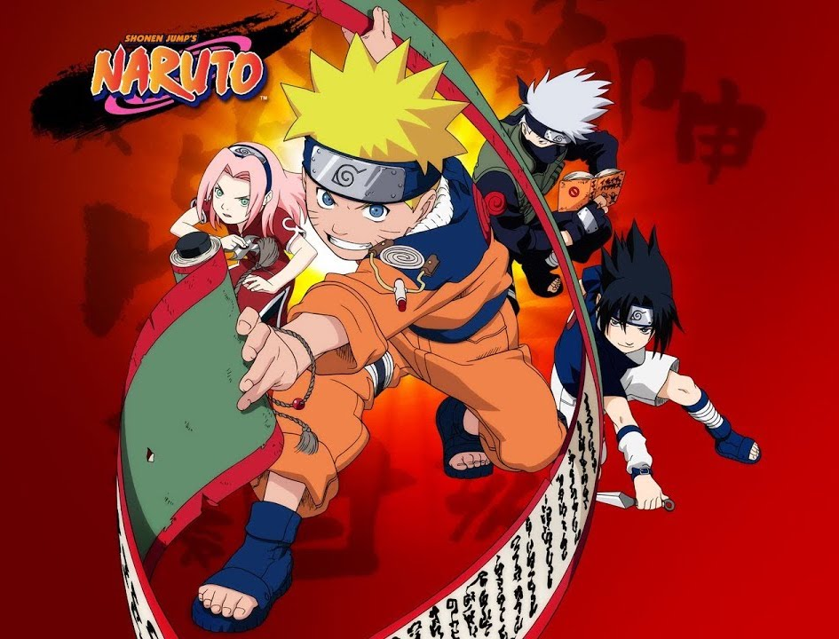
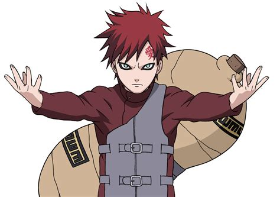
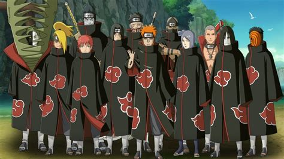
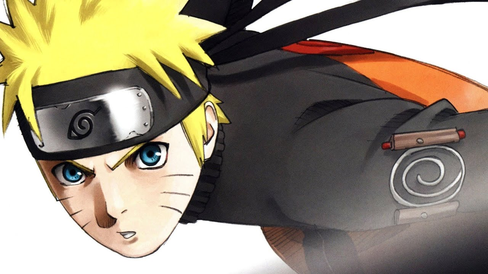
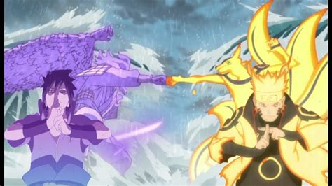

💖 Naruto de Masashi Kishimoto
Je connais la série animée Naruto et Naruto Shippuden depuis des années, mais je n’avais jamais lu les mangas de Masashi Kishimoto. Cette fois, c’est chose faite.
L’histoire (avec spoilers)
Naruto est un jeune garçon de Konoha, le village caché des feuilles au pays du feu. Il étudie à l’académie des ninjas et est plutôt mauvais élève. Son plus gros problème cependant, c’est qu’il ne parvient pas à se faire d’amis et souffre de solitude.
En effet, plusieurs années auparavant, un démon-renard effroyable a attaqué le village et le quatrième Hokage, le plus puissant ninja du village, a dû sceller ce monstre dans Naruto, qui n’était alors qu’un bébé. La plupart des villageois l’ignorent, mais ceux qui savent méprisent Naruto et le tiennent pour responsable de la mort de leurs camarades ou de leurs familles. Leur haine se transmet à leurs enfants qui ignorent le pauvre Naruto. Celui-ci n’a plus d’autre choix que de faire les quatre-cents coups pour montrer à tout le monde qu’il existe ! Son but est d’ailleurs de devenir Hokage à son tour, afin de prouver sa valeur au village tout entier.
Après avoir échoué à l’examen de l’académie pour devenir un ninja aspirant, Naruto est manipulé par l’un de ses enseignants qui l’incite à dérober un rouleau de techniques secrètes au troisième Hokage. Tous les ninjas du village se lancent alors à la poursuite de Naruto, craignant que le démon qui l’habite, connu sous le nom de Kyûbi, ne profite de ce rouleau pour s’en prendre au village. Iruka sensei finit par retrouver Naruto et comprend la machination. Il risque sa vie pour le protéger du vil enseignant et il reconnaît enfin que Naruto est un ninja à part entière de Konoha. Il gagne ainsi son bandeau d’aspirant ninja.
Pour accomplir des missions pour le village, Naruto est affecté à l’équipe 7 avec Sasuke et Sakura, sous la direction du ninja de niveau supérieur Kakashi. L’équipe 7 accomplit de nombreuses missions mettant à l’épreuve les forces et le courage des jeunes ninjas. Naruto voit rapidement en Sasuke un rival, autant sur le plan sentimental que technique. Leur affrontement contre Zabuza et Haku fait évoluer Naruto sur le plan émotionnel. Il commence à comprendre la réalité du monde des shinobis (ninjas) et les conflits qui existent de part le monde. Il se fait la promesse de ne jamais abandonner ou revenir sur sa parole et en fait son nindô (sa ligne de conduite).

Durant l’examen de sélection des ninjas de moyenne classe, Sasuke est approché par Orochimaru, un puissant ninja déserteur de Konoha qui souhaite s’emparer du corps et des pouvoirs du jeune homme pour accomplir son sort d’immortalité. Alors que Naruto devient de plus en plus fort, Sasuke s’enfonce dans l’obscurité. Confrontés au village de Suna qui les a trahis pour commenditer un coup d’État contre Konoha, Naruto affronte Gaara, un garçon qui héberge également un démon à queue, Ichibi. Leur combat et la victoire de Naruto va troubler à la fois Gaara, qui comprendra que même avec un démon à l’intérieur de soi, on peut vivre normalement et se faire des amis, et Sasuke, qui s’inquiète de voir Naruto devenir aussi puissant alors que lui-même a l’impression de stagner. Il décide finalement de suivre Orochimaru, alors même qu’il a assassiné le troisième Hokage. Sasuke n’aspire qu’à une chose, acquérir davantage de pouvoirs et devenir suffisamment fort pour se venger de son frère, Itachi, qui a décimé leur clan tout entier. Naruto, accompagné de jeunes ninjas qui deviennent ses amis, échoue à ramener Sasuke au village alors qu’il en a fait la promesse à Sakura.
Poursuivant leur entraînement, les ninjas de Konoha sont bientôt confrontés à une organisation nommée Akatsuki qui s’attaque aux réceptacles, ces ninjas à l’intérieur desquels un démon à queues est scellé. Naruto se porte au secours de Gaara, devenu Kazekage (chef du village du sable) qui a été enlevé par Akatsuki.
Il s’avère que cette organisation criminelle compte dans ses rangs Itachi, le frère de Sasuke. Naruto espère qu’en réglant son compte à Akatsuki il tombera sur Sasuke et pourra le raisonner. C’est vain. Sasuke est toujours obnubilé par la vengeance et il tue Orochimaru pour récupérer ses pouvoirs avant d’affronter son frère et de le vaincre.
Après que Naruto a vaincu le chef d’Akatsuki, Pain, il comprend que le véritable meneur de cette organisation n’est autre que Madara Uchiha, un ninja à l’origine de la fondation du village caché des feuilles avec le premier Hokage. Les deux hommes ont fini par s’affronter et Hashirama Senju a vaincu Madara Uchiha, qui cherchait à prendre le pouvoir sur le village et menaçait la paix difficilement instaurée entre les clans. Il s’avère que Madara est encore en vie et qu’il a fondé Akatsuki pour utiliser les pouvoirs des bijûs (les démons à queues) pour exterminer le monde tel qu’il existe et plonger tout le monde dans un genjustu (une illusion) afin de simuler une paix. Parallèlement à cela, Madara apprend à Sasuke que Itachi a en fait tué tous les membres de son clan sur ordre des dirigeants de Konoha parce que les Uchiha préparaient un coup d’État. Furieux et rongé par la peine d’avoir éliminé son frère, Sasuke décide de se venger de Konoha.
Pour mettre un terme aux agissements de Madara, les 5 grands pays et les 5 villages de shinobis forment une alliance et se lancent dans la quatrième grande guerre ninja. L’ennemi est puissant et dispose d’une armée de cent mille clones ligneux issus des cellules du premier Hokage. En plus, celui qu’ils pensaient être Madara s’avère être Obito Uchiha, un ancien camarade de Kakashi que tout le monde pensait mort.
L’alliance se voit contrainte d’affronter d’éminents ninjas ressuscités par un sort interdit, dont Madara Uchiha lui-même, qui avait fini par périr en attendant de pouvoir être ressuscité doté de sa pleine puissance. Obito, rendu fou de chagrin par la perte de son amour, Lin, souhaite vivre dans le monde d’illusion offert par Madara pour ne plus souffrir, même si pour cela il doit éliminer tous ses anciens camarades. Sa peine et sa haine sont le moteur qui le pousse à agir, tourmenté par Madara qui le manipule. Grâce à Naruto et à son nindô tenace et sa force hors du commun – car il est parvenu à devenir ami avec son bijû et tous les autres, dont il connaît désormais les noms (voir cette chanson trop cool) – Obito retrouve la raison et se démène pour empêcher Madara de récupérer le rinnegan (une pupille aux pouvoirs exceptionnels) qui lui permettra de mener à bien son projet. Il échoue et Madara lance son genjutsu, plongeant tout le monde, sauf Naruto, Sasuke, Sakura et Kakashi, ainsi que les anciens Hokage ressuscités, dans une illusion.
Seulement voilà, Madara a lui aussi été victime de manipulation et agissait en fait pour le compte de Kaguya Ôtsutsuki, la première femme à avoir possédé du chakra (l’énergie qui permet d’appliquer les techniques des ninjas). Kaguya veut récupérer tout le chakra qui a été disséminé parmi les hommes, en les plongeant dans une illusion qui lui permettra de puiser dans leur chakra sans qu’ils ne s’en aperçoivent. L’ermite Rikudô, fils de Kaguya, apparaît à Naruto et Sasuke alors qu’ils sont au bord de la mort, et leur transmet les pouvoirs nécessaires pour sceller sa mère et rétablir l’équilibre. L’affrontement est rude, mais les deux amis parviennent à la vaincre et à libérer tous les bijûs.
Alors que tout le monde pense que la guerre est finie et qu’il ne reste plus qu’à annuler le genjutsu, Sasuke annonce qu’il est décidé à tuer les dirigeants des 5 villages et à devenir lui-même Hokage pour remodeler le monde des shinobis et endiguer la haine qui conduit, invariablement, à la guerre. Naruto ne peut pas rester sans réagir. Il affronte Sasuke dans ce qu’il perçoit comme leur dernier combat. Sasuke est déterminé à le tuer, cette fois, afin de trancher tous les liens qui l’unit aux autres et pouvoir devenir l’ennemi commun de toutes les nations, leur donnant ainsi l’obligation de rester alliées pour lutter contre lui. Il souhaite devenir immortel afin de rester toujours présent dans l’ombre et veiller à ce que la paix se maintienne. Naruto ne voit pas les choses de cette manière. Il tente encore de convaincre Sasuke qu’ensemble, ils peuvent maintenir la paix, tout en se battant comme si c’était la fin. Ils se blessent terriblement l’un l’autre et Sasuke finit par admettre sa défaite. Ses liens sont trop forts. Il comprend qu’il a trouvé une nouvelle famille dans l’équipe 7 et dans le village tout entier et qu’il doit expier ses fautes et mettre ses forces au service du village pour que le sacrifice de son frère Itachi n’ait pas été vain.
Quelques années plus tard, Naruto est enfin devenu Hokage. Il est père de famille et doit gérer le village tout entier, mais aussi son fils turbulent qui manque d’affection.
Manga ou série ?
Le manga se découpe en 72 tomes, en noir et blanc. L’histoire est prenante et il est difficile de ne pas les enchaîner.
La série est quant à elle découpée en 2 saisons, Naruto et Naruto Shippuden. La première partie se concentre sur l’enfance de Naruto et les premières missions, jusqu’à la défection de Sasuke. La deuxième est axée sur le conflit qui oppose les villages à Akatsuki, puis à Madara. Il y a de nombreux épisodes hors-série qui rallongent considérablement l’histoire, mais agrémentent aussi certains personnages.
J’ai beaucoup aimé lire le manga, mais j’ai préféré regarder la série. Le fait que ce soit en couleurs, animé et qu’il y ait des musiques superbes rend l’histoire plus profonde, plus palpable et beaucoup plus émouvante par bien des aspects. Les combats sont plus fluides et plus compréhensibles, quand dans le manga on passe d’une case à l’autre sans être bien certain d’avoir compris tous les mouvements des personnages. Les voix des personnages et leurs intonations permettent aussi de plus rigoler ou pleurer, en fonction des circonstances.
Mon avis
Sur l’histoire
Les trois premiers quarts de l’histoire sont extraordinaires. On suit l’évolution d’un enfant malheureux qui cherche par tous les moyens à être reconnu par ses pairs. Il souffre, commet des erreurs, et progresse, autant sur le plan émotionnel que physique – et très peu sur le plan intellectuel ^^. Il est agréable de voir comme toutes ses rencontres, tous ses compagnons et toutes les épreuves qu’il endure forgent son caractère et l’amènent à devenir celui qui peut changer les choses.
J’ai beaucoup aimé les périodes d’entraînement, mais aussi les moments de discussion et de compréhension mutuelle avec les ennemis. Naruto permet aux vilains de se repentir, mais les vilains lui apprennent aussi beaucoup, du début à la fin.
J’ai aimé le revirement de situation dans l’histoire d’Itachi, qui est un personnage très touchant et attachant, bien qu’il apparaisse comme sombre et plutôt discret.
De la même manière, le changement de comportement de Gaara ou d’Obito face à la force de caractère de Naruto est excellent.
Certains autres personnages comme Kakashi ou Shikamaru sont très intéressants et le niveau de réflexion fourni durant les périodes de conflits pour mettre au point des tactiques ou communiquer avec les alliés est exceptionnel. L’auteur semble s’être bien documenté sur la guerre.
La dernière partie de l’histoire, relative au plan de Madara et à Kaguya m’a beaucoup moins plu. Il était déjà assez surprenant que le soi-disant Madara soit en fait Obito, alors qu’auparavant on apprenait que Pain n’était pas le véritable chef d’Akatsuki. L’histoire d’Obito était inattendue et complètement renversante ! De quoi nous faire pleurer un peu plus. Mais pourquoi en rajouter une couche en insérant un personnage aussi peu humain que Kaguya. Elle est froide et incompréhensible puisqu’on ne prend pas le temps de nous la présenter convenablement. Déjà que Madara était dingue et assez peu convaincant – ses motivations ne me parlaient pas trop, contrairement à celles d’Obito ou de Pain. Du coup, je trouve que la fin est de trop et que le combat Naruto-Sasuke aurait dû avoir lieu juste après que Madara soit tombé, par le concours d’Obito qui se repend en aidant à le vaincre.
Sur le manga
Cela m’a beaucoup plu de lire un manga.
J’avais oublié comme la dynamique est tangible avec les cases bien droites ou allongées, les onomatopées qui débordent de partout, les lignes de mouvements, les gros plans sur les expressions du visage ou au contraire, un personnage minuscule, seul au milieu du vide, ou encore les souvenirs mis en avant par le contour noir de la page ou les cases grisées par une trame.
La découpe des épisodes était pertinente et donnait toujours envie de poursuivre la lecture. En bref, le format manga est très agréable et permet une lecture aisée.
Ce doit être un travail de titan. Masashi Kishimoto a mis 15 ans à dessiner l'intégralité de Naruto !
En conclusion, je dirai que Naruto, que ce soit en manga ou en série animée, est l’une de mes histoires préférées et je n’ai sans doute pas fini de m’y plonger.